← Всё резюме
OXIO Bikes - запуск и управление прокатом мотобайков на Бали
2022 - 2025
Период: 01.12.2022 → 03.02.2025 (2 года 2 месяца 2 дня)
Instagram ➡️ https://www.instagram.com/oxiobikes
Запуск, операционное управление и закрытие проката мотобайков на Бали (полный цикл).
Я построил бизнес-процесс проката мотобайков “с нуля” на Бали: от закупки активов и упаковки сервиса до найма курьеров, учёта в Airtable, продаж/маркетинга и финального выхода (продажа всех байков + закрытие компании). Параллельно прошёл мощную практику по бюрократии и юридической стороне ведения компании в Индонезии.
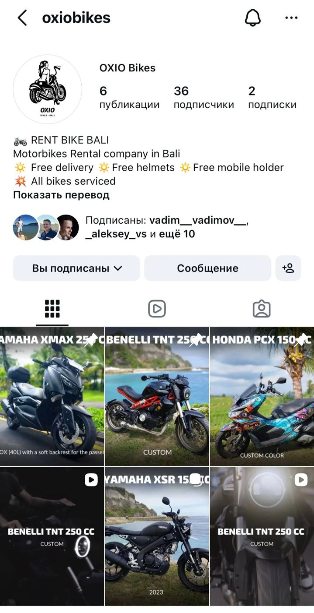
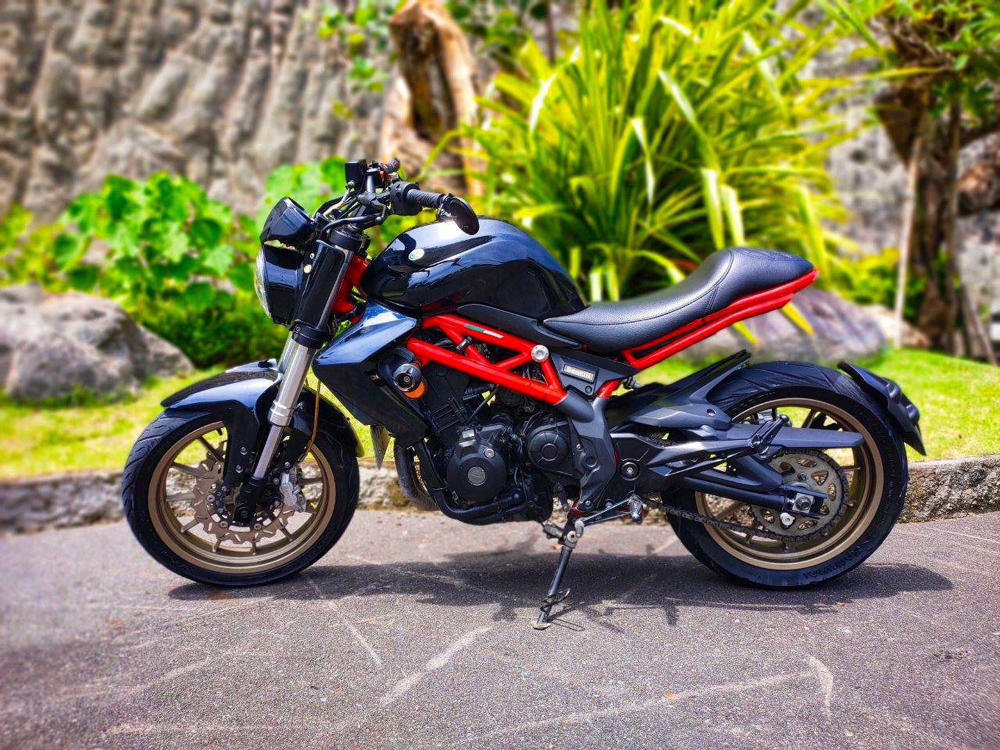
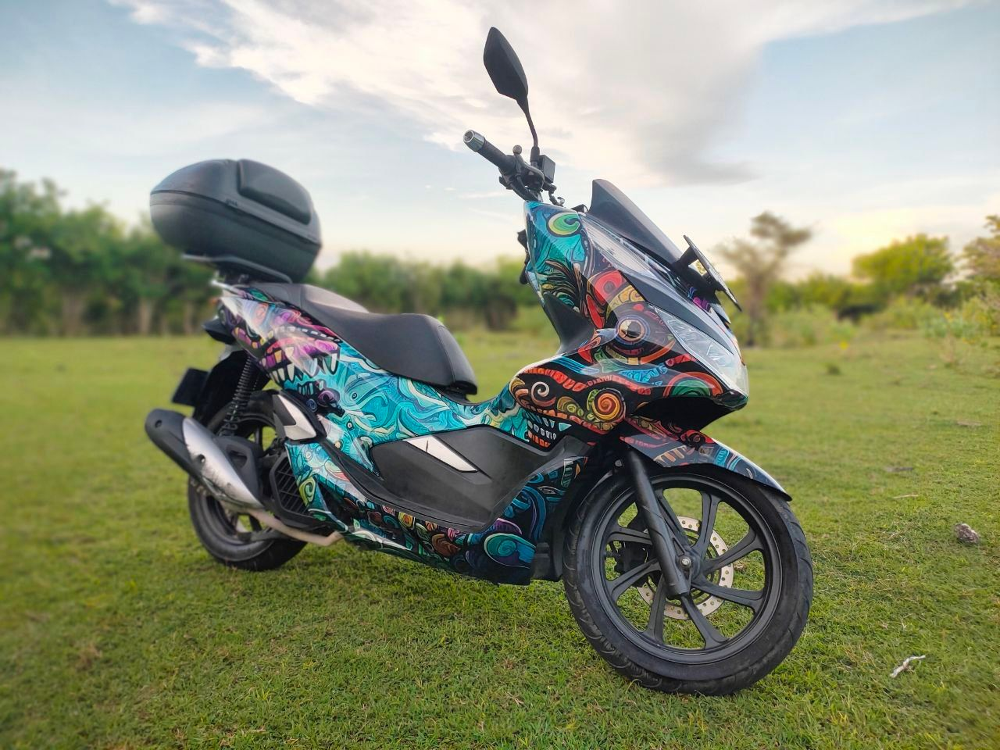
Роль: основатель-оператор / номинальный директор компании (Индонезия)
Формат: проект на инвестиционные средства (закупка парка), полный цикл на мне
Активы парка:
- Honda PCX 150 (2020) - куплен 01.12.2022 (первый байк парка)
- Yamaha XMAX 250 (2018) - куплен 17.12.2022
- Yamaha XSR 150 (2022) - куплен 09.01.2023
-
Benelli TNT 250 (2017) - куплен 25.01.2023
Финальная ликвидация парка: начало 2025, последний продан - XMAX 03.02.2025.
Продукт и сервис (позиционирование):
Instagram: OXIO Bikes - https://www.instagram.com/oxiobikes
Описание сервиса (как упаковывалось для рынка):
- Free delivery (бесплатная доставка)
- Free helmets (шлемы включены)
- Free mobile holder (держатель телефона включён)
- All bikes serviced (все байки обслужены)
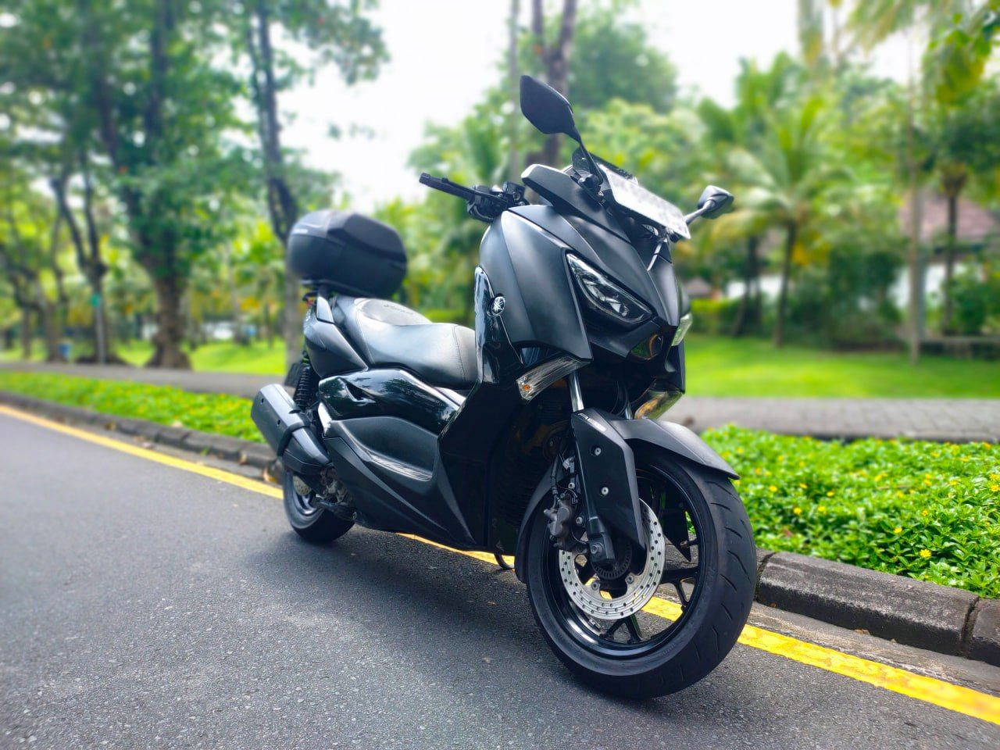
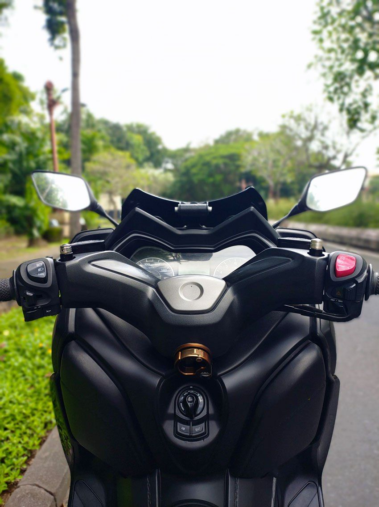
Что я сделал (по блокам)
1) Юридическая и бюрократическая школа (Индонезия)
Это отдельная сильная компетенция: я прошёл путь номинального директора и руками прожил бюрократию “как оно реально работает”:
- Открытие компании и получение официальных документов
- Получение налогового номера директора
- Работа с разными подрядчиками по юридическим услугам (не один исполнитель):
- у одного - KITAS
- у другого - открытие компании
- у третьего - налоговый номер директора
- у четвертого - продление/изменения: добавление KBLI (виды деятельности), изменения устава
- Практика “экономия + сбор информации”: сознательно выбирал разных подрядчиков, чтобы снизить стоимость и получить максимум нюансов от разных специалистов
- Печати/подписи, договорная база, операции с банками и деньгами
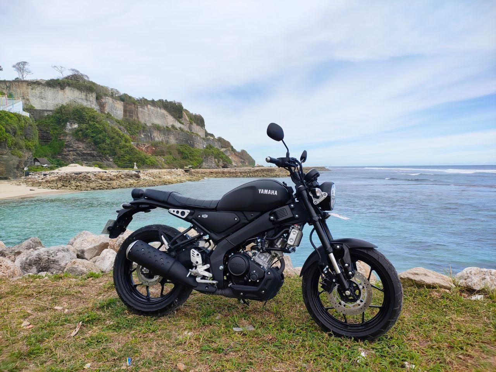
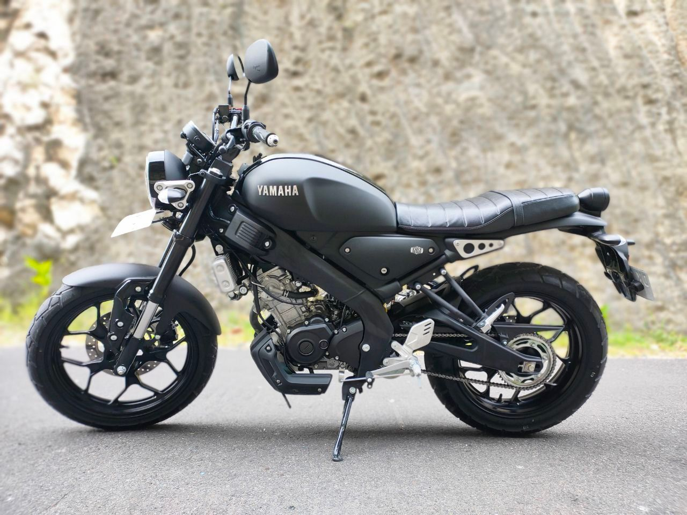
2) Закупка и подготовка парка (актив-менеджмент)
- Мониторинг рынка → поиск лучшего предложения → осмотр → оценка состояния → проверка документов → покупка
- Приведение каждого байка в стандарт проката:
- техническое состояние / ремонт при необходимости
- комплектация: держатель телефона + шлем
- тест-драйв и проверка перед запуском в аренду
- Я вёл историю каждого байка: что делалось, сколько стоило, какие работы выполнялись
3) Операционка проката (качество и контроль)
- Организация выдачи/приёма, коммуникация с клиентом, контроль “до/после”
- Регламент подготовки:
- мойка байка после каждой аренды
- подготовка к следующему арендатору
- заправка
- Контроль сервисных задач: если нужен ремонт/ТО - организация сервиса и возврат в “стандарт проката”
4) Учёт и система управления (не “на словах”)
- Первичная фиксация всего происходящего - через Telegram-чат (единый рабочий канал по байкам)
- Дальше - систематизация в Airtable (я специально выбрал Airtable как эксперимент вместо Notion/Google Sheets):
- статусы байков (In Rent / Available)
- финансовая история (затраты/работы/события)
- физическая история (что менялось/ремонтировалось/обслуживалось)
5) Договор
6) Продажи и маркетинг (руками, без агентств)
- Сделал качественные фото байков: выбирал фон/локацию, снимал на телефон, готовил визуалы
- Писал продающие тексты и размещал объявления
- Каналы:
- Telegram-чаты (подборка мест, где можно рекламировать прокат)
- Facebook
- Instagram
- Обработка заявок: переговоры, договорённости по встречам, передача/приём
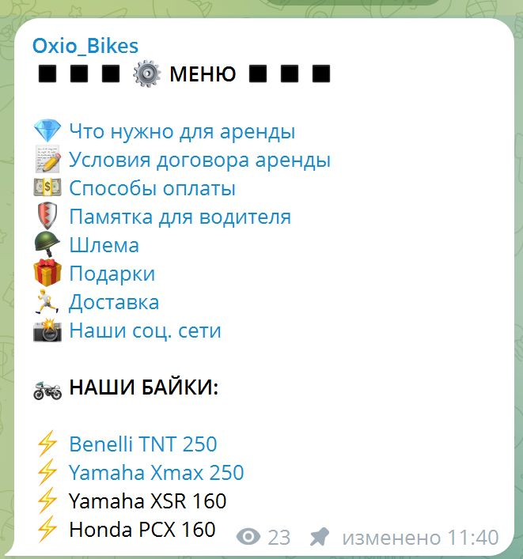
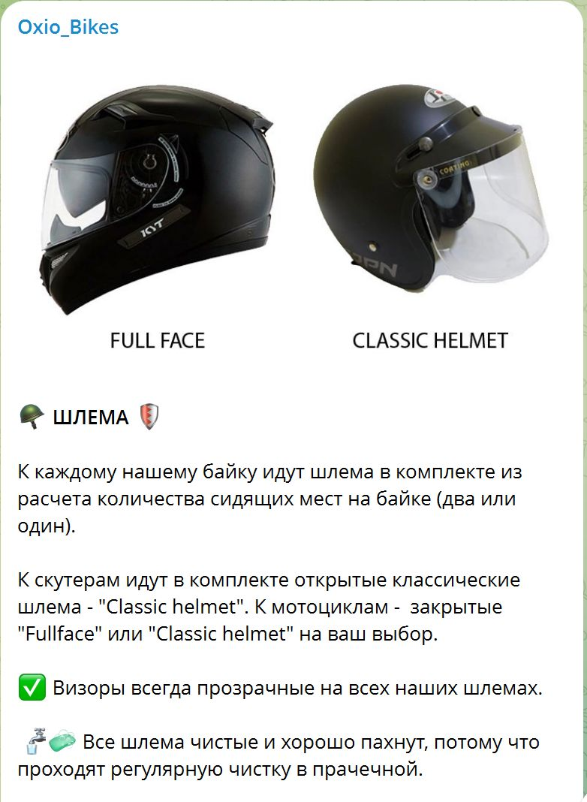
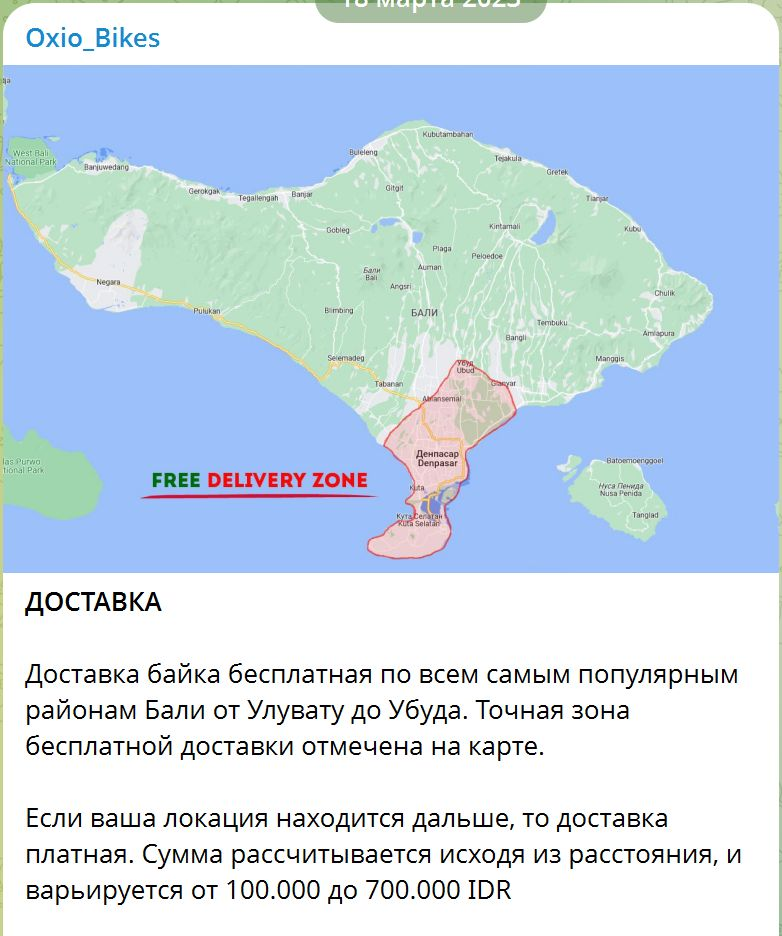
Создал уникальный дизайн байка → в нейросети сгенерировал изображение → для печати и нанесения на байк обратился в Stiker Shop
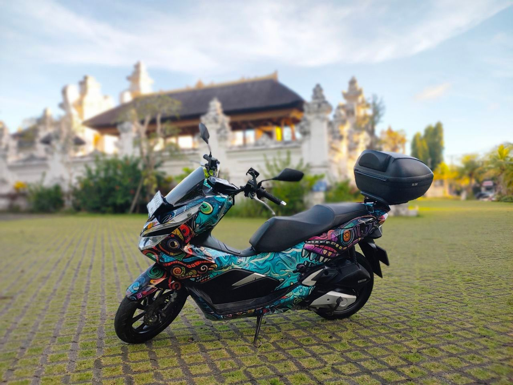
7) Найм и управление людьми (полевые курьеры)
- Сделал вакансию на английском и индонезийском языке
- Размещал в Facebook-группах по работе, проводил собеседования
- Нанял сотрудников-курьеров и делегировал:
- доставку/забор байка
- мойку
- фото “до/после”
- поездки в сервис
- Контролировал качество и платил зарплату
8) Клиентская документация и безопасность (сервис “как продукт”)
- Разработал “Памятку для водителя” (готовый документ для клиента), где структурированы:
- какие нужны права (международные A/Б) и варианты решения на месте
- как снизить риск остановки ГАИ (шлем, поведение, стоп-линии и т.д.)
- ориентиры по штрафам и переговорной стратегии при остановке
- что делать при проколе колеса (стоимость, где искать bengkel, ночной сценарий, выезд мастера)
- базовый алгоритм действий при мелком ДТП (этика, деэскалация, варианты “быстро разъехаться”, когда нужен рапорт)
- политика по кражам/парковке/блокировке руля и действия при угоне
9) Система скриптов и внутренняя мини-CRM в Telegram (ускорение продаж/поддержки)
Я построил внутренний инструмент, который экономит время и стандартизирует коммуникации:
- Создал внутренний чат/меню “Oxio_Bikes” со структурой разделов (пример):
- “Что нужно для аренды”, “Условия договора”, “Способы оплаты”, “Памятка водителя”, “Шлема”, “Подарки”, “Доставка”, “Наши соцсети”, “Наши байки”
- Логика работы: кликаешь раздел → открывается готовый пост/шаблон → копируешь и отправляешь клиенту
- Результат: быстрее ответы, меньше ошибок, единый стандарт сервиса, проще делегировать сотрудникам
10) Выход из бизнеса и закрытие (редкий навык)
Мы протестировали модель и приняли взрослое решение:
- Причина выхода: не понравилась математика бизнеса (высокая конкуренция, высокий уровень сервиса, много операционки при слабой марже)
- Я организовал продажу всех байков
- Инициировал и довёл до результата закрытие компании (через услугу закрытия)
Ключевые скиллы
- Business setup в Индонезии: документы, подрядчики, KBLI, устав, налоги, банковские операции, печати, договорная база, закрытие
- Операционный менеджмент: регламенты, контроль качества, сервис/мойка/подготовка, управление полевыми задачами
- Asset management: поиск/покупка/доведение активов до стандарта, история и состояние каждого байка
- Системный учёт: Telegram → Airtable как единая база (статусы, события, затраты, история)
- Риск-менеджмент: договор + визуальная фиксация дефектов (снижение спорных кейсов)
- Sales & marketing руками: фото/упаковка/посты/размещения/обработка заявок
- HR и управление исполнителями: найм, собеседования, постановка задач, контроль качества, оплата
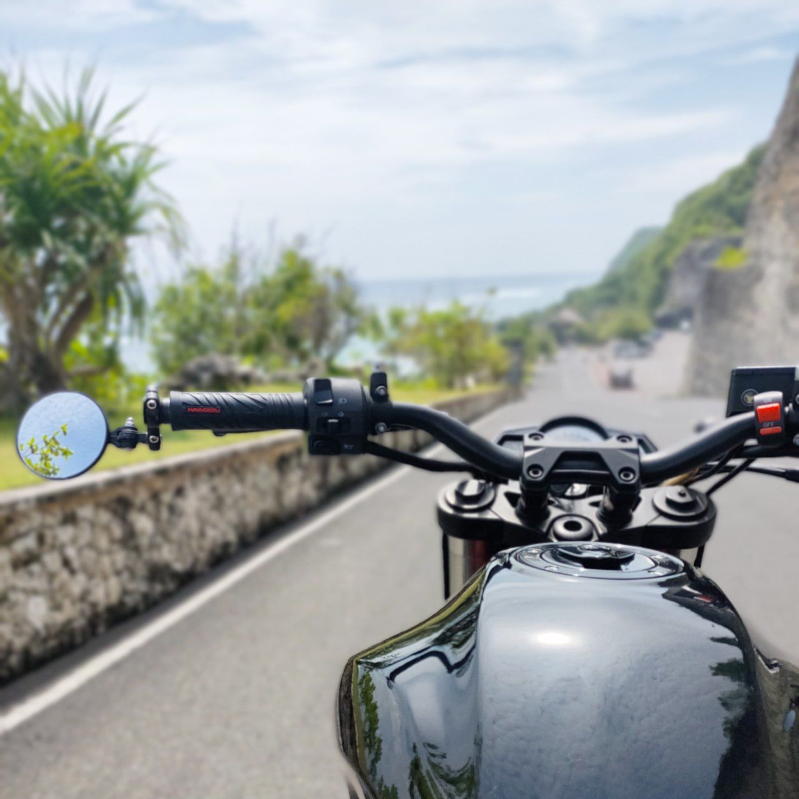
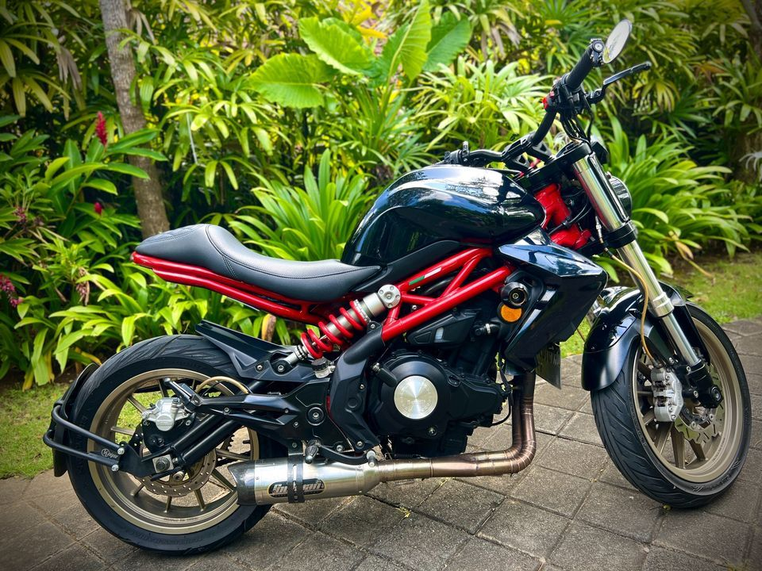
Почему этот кейс сильный
Это не “просто сдавал байки”. Это кейс, где я:
- запустил сервис с понятной упаковкой (delivery/helmets/holder/service)
- построил систему учёта и дисциплину процессов
- прокачал реальную юридическую экспертизу в Индонезии
- умею закрывать проекты правильно, когда математика не сходится (продал активы, свернул операционку, закрыл компанию)